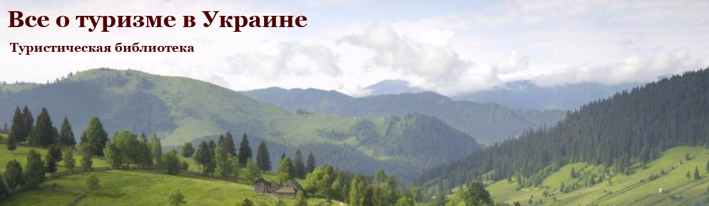

|  | ||||
|---|---|---|---|---|
| Главная | ||||
|
ГОРОДА УКРАИНЫ
ВИННИЦА ДНЕПРОПЕТРОВСК ДОНЕЦК ИВАНО-ФРАНКОВСК КИЕВ ХАРЬКОВ |
Достопримечательности УкраиныУкраина – урбанизированное государство, более чем 60 % ее население проживает в городах, из них около 40 % – в малых городах. Очевидной является разница коммунальных и социальных стандартов для жителей больших и малых городов. В значительной степени эта ситуация заранее определена предыдущей политикой Советского Союза, которая формировала зависимость экономики малого города от деятельности нескольких предприятий. Для большинства из них стал вопрос разработки собственных стратегий развития в новых условиях. Позитивом является то, что Украина является страной, чьи рекреационные возможности, историческое и культурное наследие является колоссальными ресурсами развития. Туристические маршруты Украины – направления вектора движения по одной из прекраснейших стран мира, самобытной, уникальной и гостеприимной державе. Чего бы Вы ни ждали от путешествия по Украине, этим ожиданиям суждено не просто сбыться, а реализоваться наилучшим для туриста образом: стать одними из ярких впечатлений от странствий. Туры по Украине привлекут внимание любого, даже нацеленного на экзотический отдых туриста. И если кто-то считает, что курорты Крыма уже не смогут удивить его чем-то новым, необычным, не старайтесь показать себя знатоком Края, история которого, его животный и растительный мир даже толком не изучены. Не говорите о себе, как о знатоке Украины, если курорты Карпат Вы посещали только зимой. |
ПОПУЛЯРНОЕ НА САЙТЕСамые интересные места Украины Влияние терминологического аппарата на отдельные показатели туристической деятельности |
|||||||||
  Не думайте, что области Украины, не способны предложить путешественникам на обозрение достопримечательности, трогающие за душу. Посетите их и поймете, что отдых вдали от цивилизации, на Земле, с обычными, добродушными и искренними людьми дарует силы двойне большие, чем самый дорогой туристический сервис. Города Украины, села и деревушки с их историей существования, уходящей вглубь веков, к предкам всех жителей Европы, славянам, способны поведать любознательному путнику сагу о древнем мире. Услышать ее сможет лишь человек с открытым сердцем, который посетил курорты Украины с желанием разносторонне обогатить свой внутренний мир, снять усталость или избавиться от душевных или телесных недугов. |
|||||||||||
{kind=link}
{kind=link}
{kind=link}
{kind=link}
{kind=link}
{kind=link}
{kind=link}
|
2016 © Владислав Твердохлеб |